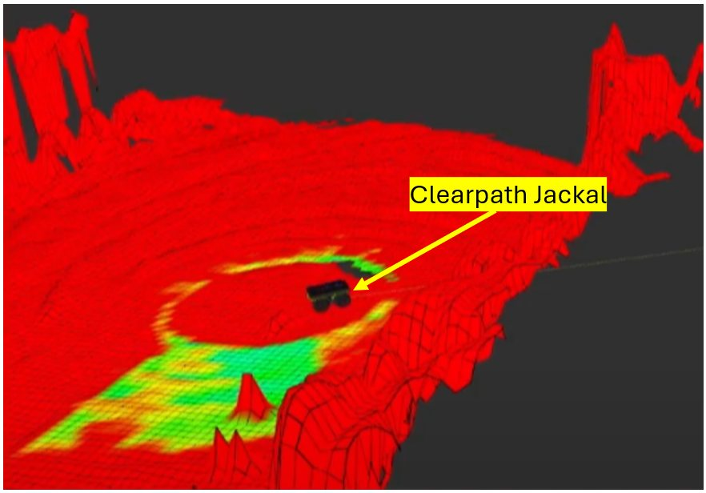
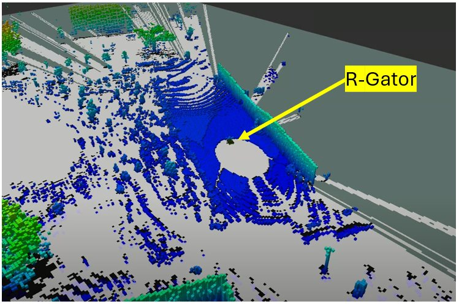
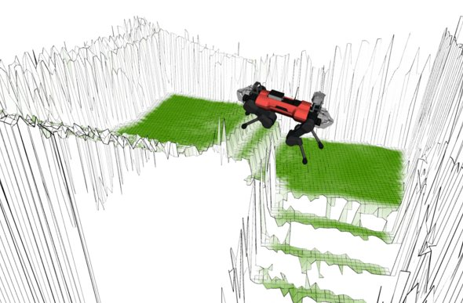

terrain traversability mapping
From detections to traversability maps
A UGV needs one map that combines terrain shape, terrain type and obstacles. I deployed vehicle-centric 2.5D elevation maps and 3D voxel maps on different robots, compared them, then set up a GPU multi-layer elevation map that fuses LiDAR geometry with camera information.
2.5D elevation map · Jackal
Pilot study on a Clearpath Jackal (ROS1 Melodic): a Velodyne VLP-16 and an Intel RealSense D435i fused into a grid of cell heights, using Clearpath's IMU + wheel odometry.
3D voxel map · R-Gator
OctoMap-style voxel map on a John Deere R-Gator (ROS2 Humble) from an Ouster OS1-128, using my custom EKF odometry. It stores overhangs, but costs more memory and compute, which matters little outdoors.
GPU multi-layer map · Husky
On a Clearpath Husky, a GPU multi-modal elevation-mapping package (MEM) builds a 2.5D map with extra layers (traversability, texture, terrain class). It only supports ROS1, so I ran it in Docker with ROS1↔ROS2 bridges into a ROS2 Humble system.




Takeaways so far
- For large outdoor areas, 2.5D maps beat 3D voxels on compute for the same traversability decisions.
- Most elevation maps leave occluded cells empty, which is exactly where deep negative obstacles hide. That gap is why the negative-obstacle cost map should become its own layer.
- Camera layers (texture and terrain class) complement LiDAR geometry, for example for grass versus gravel.
References & credits
- P. Fankhauser, M. Bloesch, C. Gehring, M. Hutter, and R. Siegwart, “Robot-centric elevation mapping with uncertainty estimates,” CLAWAR, 2014.
- P. Fankhauser, M. Bloesch, and M. Hutter, “Probabilistic terrain mapping for mobile robots with uncertain localization,” IEEE RA-L, 3(4):3019–3026, 2018.
- A. Hornung, K. M. Wurm, M. Bennewitz, C. Stachniss, and W. Burgard, “OctoMap: An efficient probabilistic 3D mapping framework based on octrees,” Autonomous Robots, 34:189–206, 2013.
- G. Erni, J. Frey, T. Miki, M. Mattamala, and M. Hutter, “MEM: Multi-modal elevation mapping for robotics and learning,” IEEE/RSJ IROS, 2023.
- S. Macenski, T. Foote, B. Gerkey, C. Lalancette, and W. Woodall, “Robot Operating System 2: Design, architecture, and uses in the wild,” Science Robotics, 7(66), 2022.
Hardware credits. Husky, Jackal, Warthog: Clearpath Robotics. R-Gator: Deere & Company (John Deere). OS1-128, OS2-64 LiDAR: Ouster. VLP-16 LiDAR: Velodyne Lidar. RealSense D435i: Intel. Product names and trademarks belong to their respective owners.